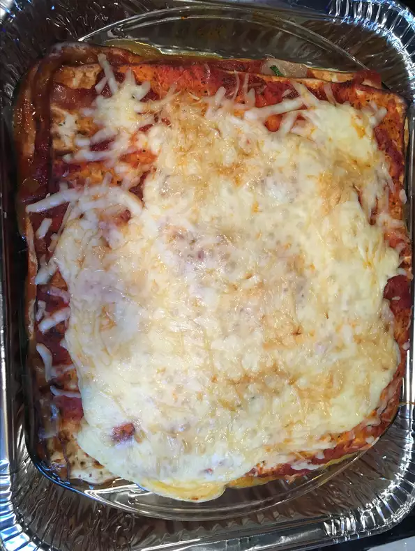

Passover Matzo Lasagna

Description
You won't miss the lasagna noodles in this quick to assemble dairy passover dish.
Whole Matzo boards are used in place of the noodles.
Ingredients
- 6 matzo sheets
- 4 eggs, lightly beaten
- 1 (24 ounce) carton cottage cheese
- 1 (8 ounce) package shredded mozzarella cheese, divided
- 1 (28 ounce) jar marinara sauce
Steps
- Preheat an oven to 350 degrees F (175 degrees C).
- Soak matzo sheets in a large bowl of hot water until tender, about 30 seconds. Drain.
Combine eggs, cottage cheese, and 1/2 of the mozzarella cheese in a bowl. Pour 1/2 of a cup of
marinara sauce on the bottom of a 9x13 inch baking pan. Place 2 matzo sheets over the
sauce, then pour another layer of sauce over the sheets. Spread 1/2 of the cheese mixture on top, then
another layer of sauce. Continue layering until all the matzo sheets are used, finishing with a
layer of sauce. Sprinkle the remaining mozzarella cheese over the top.
- Bake in the preheated oven until cheese is melted and sauce is bubbly, 30 to 40 minutes.
Nutrition facts
Per Serving: 242 calories; protein 16.4g; carbohydrates 23.2g; fat 8.9g;
cholesterol 83.8mg; sodium 636.9mg. Full Nutrition